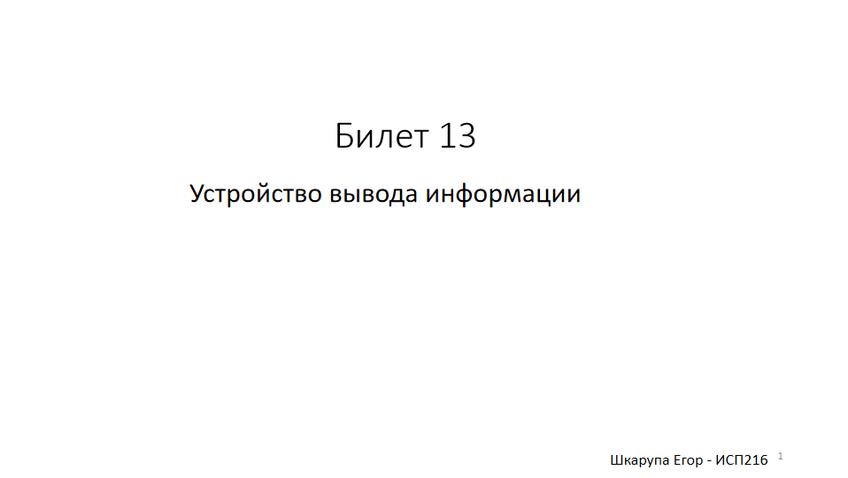
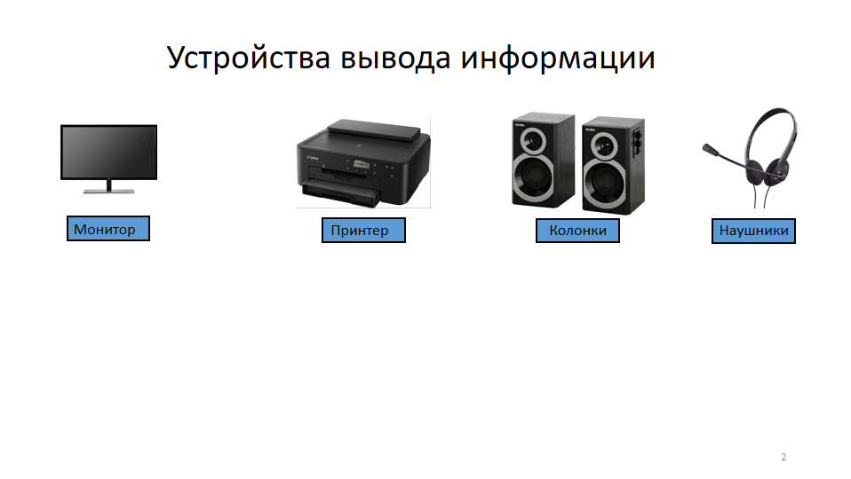

1.Матричный принтер — устройство, которое создаёт изображение на бумаге из отдельных маленьких точек ударным способом. Назначение Матричные принтеры предназначены для недорогой потоковой печати. Они подходят для задач, где важна скорость и надёжность, но не предъявляются высокие требования к качеству отпечатка. Применение Некоторые области применения матричных принтеров: Бухгалтерский учёт — печать чеков, счетов и других финансовых документов. Логистика — печать этикеток, штрих-кодов и других идентификационных элементов. Промышленность — печать технических документов, инструкций. Торговля — печать ценников, рекламных материалов и других торговых документов. Создание копий — матричные принтеры могут печатать несколько идентичных экземпляров документа одновременно с помощью копировальной бумаги. Принцип работы Изображение формируется печатающей головкой с набором игл (игольчатой матрицей), которые приводятся в действие электромагнитами. Головка перемещается вдоль листа бумаги, при этом иглы ударяют по бумаге через красящую ленту, оставляя точки. Совокупность этих точек формирует символы и изображения. Количество игл в печатающей головке определяет разрешающую способность принтера и, следовательно, качество печати
2.
Что мы прошли на уроках:
3.
 